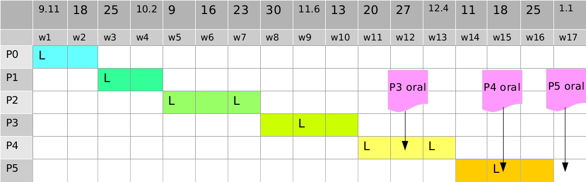

Operating System Labs
Dept. of Computer Science, ECNU, Fall 2017
Basic
Time and Venue
- Lectures: Tuesday 8:00am - 9:40am @ 教书院 116 (odd weeks)
- Labs: Tuesday 10:00am - 11:40am @ 理科楼 B527, B519
Stuff
Instructor: Yuanbin Wu
Email: ybwu[at]cs.ecnu.edu.cn
Office: 911 Science Building B
TA1: 韦阳
Email: weiyang[at]godweiyang.com
TA2: 黄子寅
Email: huangz1yin[at]163.com
Projects
Name Your Projects
StudentNumber_Name_LabX.zip (e.g., 10152130001_李明_Lab0.zip)
Submit Your Projects
Class 1: oslab2018_class1[at]163.com
Class 2: oslab2018_class2[at]163.com
Topics
Lecture Slides
Timeline (tentative)

Plagiarism Policy
ALL participants will loss ALL credits of the project if any improper code/doc sharing is discovered.
Late Policy
- For P0, P1, P2, late handins will NOT be accepted.
- For P3, P4, P5:
- Your group will have 3 “late days”.
- You need to email TA at least 1 hour before the deadline.
- If all your 3 “late days” are used, late handins will not be accepted.
Readings
Main
Unix Programming
- Advanced Programming in the UNIX Environment,
W. Richard Stevens, Stephen A. Rago
C Programming
- The C Programming Language,
Brian W Kernighan, Dennis M. Ritchie
Linux Kernel
- Linux Kernel Development,
Robert Love